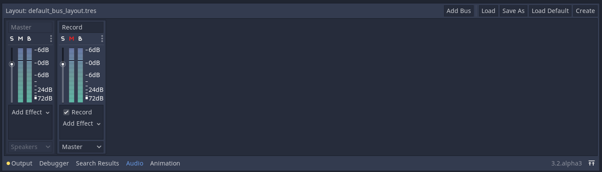
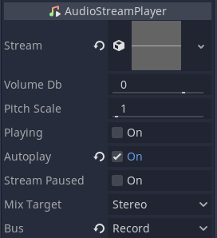

Đang cập nhật
Nội dung trang này chưa được cập nhật cho Godot
4.7
và có thể đã lỗi thời. Nếu bạn biết cách cải thiện trang này hoặc xác nhận
được rằng nó vẫn đúng, hãy gửi một pull request (bản tiếng Anh).
Ghi âm bằng microphone
Godot hỗ trợ ghi âm trong game trên Windows, macOS, Linux, Android và iOS.
Một demo đơn giản có sẵn trong các dự án demo chính thức và sẽ được dùng để hỗ trợ cho bài hướng dẫn này: https://github.com/godotengine/godot-demo-projects/tree/master/audio/mic_record.
Bạn cần bật đầu vào âm thanh trong cài đặt dự án Audio > Driver > Enable Input, nếu không bạn sẽ chỉ nhận được các tệp âm thanh rỗng.
Trên iOS và iPadOS, cũng cần đặt cài đặt nâng cao Audio > General > iOS > Session Category để bao gồm Record hoặc Play and Record.
Cấu trúc của demo
Demo gồm một scene duy nhất. Scene này có hai phần chính: GUI và âm thanh.
Chúng ta sẽ tập trung vào phần âm thanh. Trong demo này, một bus tên Record với hiệu ứng Record được tạo ra để xử lý việc ghi âm. Một AudioStreamPlayer tên AudioStreamRecord được dùng để ghi âm.


var effect
var recording
func _ready():
# We get the index of the "Record" bus.
var idx = AudioServer.get_bus_index("Record")
# And use it to retrieve its first effect, which has been defined
# as an "AudioEffectRecord" resource.
effect = AudioServer.get_bus_effect(idx, 0)
private AudioEffectRecord _effect;
private AudioStreamSample _recording;
public override void _Ready()
{
// We get the index of the "Record" bus.
int idx = AudioServer.GetBusIndex("Record");
// And use it to retrieve its first effect, which has been defined
// as an "AudioEffectRecord" resource.
_effect = (AudioEffectRecord)AudioServer.GetBusEffect(idx, 0);
}
Việc ghi âm được xử lý bởi resource class_AudioEffectRecord, có ba phương thức: get_recording(), is_recording_active() và set_recording_active().
func _on_record_button_pressed():
if effect.is_recording_active():
recording = effect.get_recording()
$PlayButton.disabled = false
$SaveButton.disabled = false
effect.set_recording_active(false)
$RecordButton.text = "Record"
$Status.text = ""
else:
$PlayButton.disabled = true
$SaveButton.disabled = true
effect.set_recording_active(true)
$RecordButton.text = "Stop"
$Status.text = "Recording..."
private void OnRecordButtonPressed()
{
if (_effect.IsRecordingActive())
{
_recording = _effect.GetRecording();
GetNode<Button>("PlayButton").Disabled = false;
GetNode<Button>("SaveButton").Disabled = false;
_effect.SetRecordingActive(false);
GetNode<Button>("RecordButton").Text = "Record";
GetNode<Label>("Status").Text = "";
}
else
{
GetNode<Button>("PlayButton").Disabled = true;
GetNode<Button>("SaveButton").Disabled = true;
_effect.SetRecordingActive(true);
GetNode<Button>("RecordButton").Text = "Stop";
GetNode<Label>("Status").Text = "Recording...";
}
}
Khi demo bắt đầu, hiệu ứng ghi âm chưa được kích hoạt. Khi người dùng nhấn RecordButton, hiệu ứng được bật bằng set_recording_active(true).
Ở lần nhấn nút tiếp theo, vì effect.is_recording_active() là true, stream đã ghi có thể được lưu vào biến recording bằng cách gọi effect.get_recording().
func _on_play_button_pressed():
print(recording)
print(recording.format)
print(recording.mix_rate)
print(recording.stereo)
var data = recording.get_data()
print(data.size())
$AudioStreamPlayer.stream = recording
$AudioStreamPlayer.play()
private void OnPlayButtonPressed()
{
GD.Print(_recording);
GD.Print(_recording.Format);
GD.Print(_recording.MixRate);
GD.Print(_recording.Stereo);
byte[] data = _recording.Data;
GD.Print(data.Length);
var audioStreamPlayer = GetNode<AudioStreamPlayer>("AudioStreamPlayer");
audioStreamPlayer.Stream = _recording;
audioStreamPlayer.Play();
}
Để phát lại bản ghi, bạn gán bản ghi làm stream của AudioStreamPlayer và gọi play().
func _on_save_button_pressed():
var save_path = $SaveButton/Filename.text
recording.save_to_wav(save_path)
$Status.text = "Saved WAV file to: %s\n(%s)" % [save_path, ProjectSettings.globalize_path(save_path)]
private void OnSaveButtonPressed()
{
string savePath = GetNode<LineEdit>("SaveButton/Filename").Text;
_recording.SaveToWav(savePath);
GetNode<Label>("Status").Text = string.Format("Saved WAV file to: {0}\n({1})", savePath, ProjectSettings.GlobalizePath(savePath));
}
Để lưu bản ghi, bạn gọi save_to_wav() với đường dẫn tới một tệp. Trong demo này, đường dẫn do người dùng nhập vào thông qua ô nhập LineEdit.